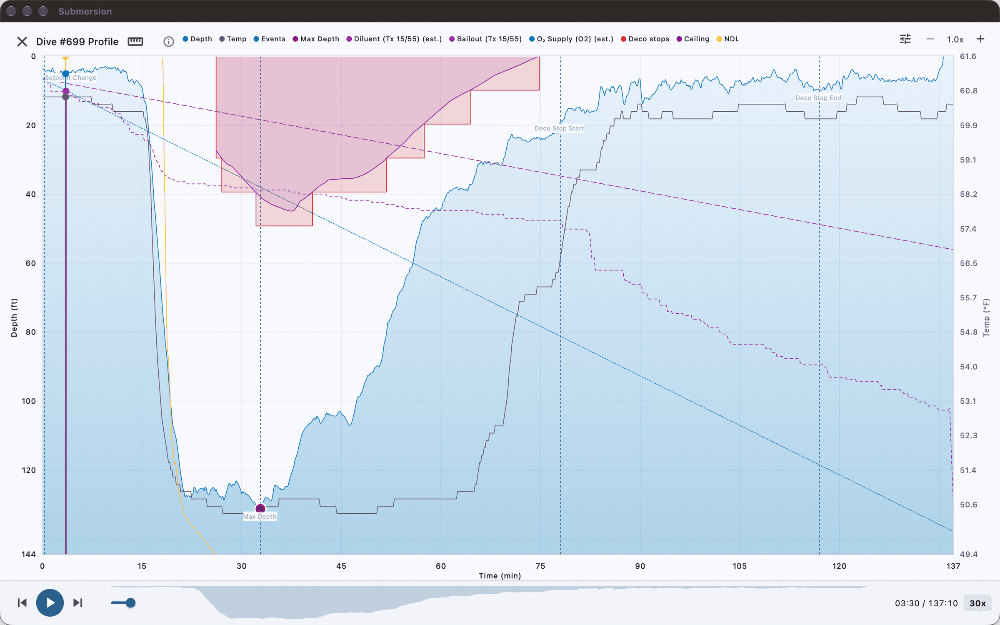
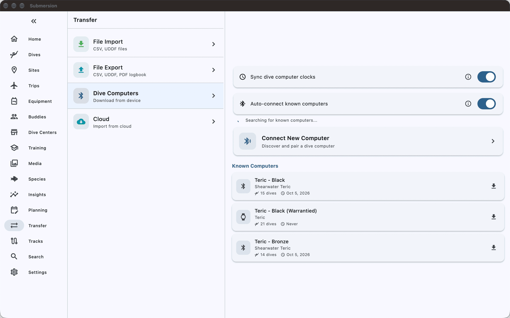
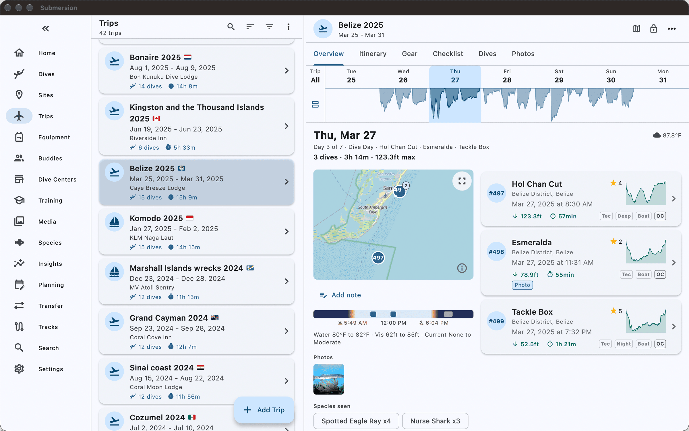
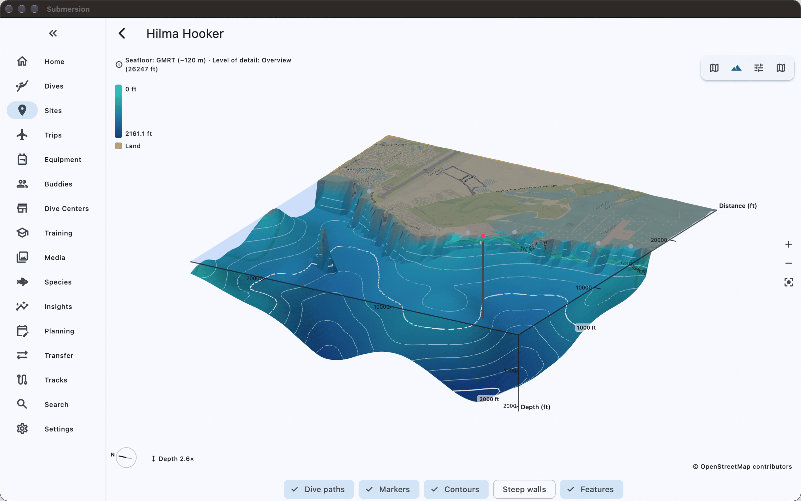
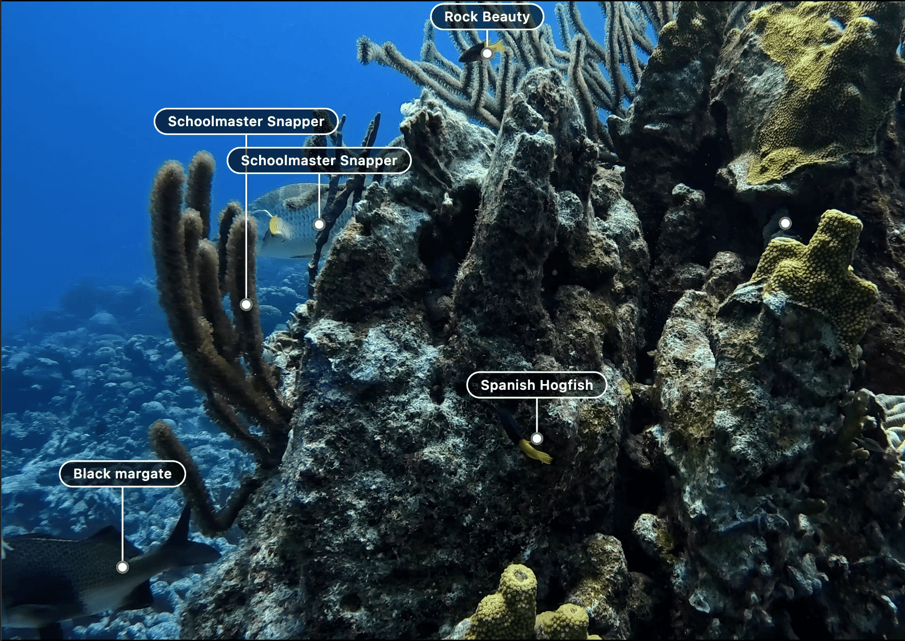
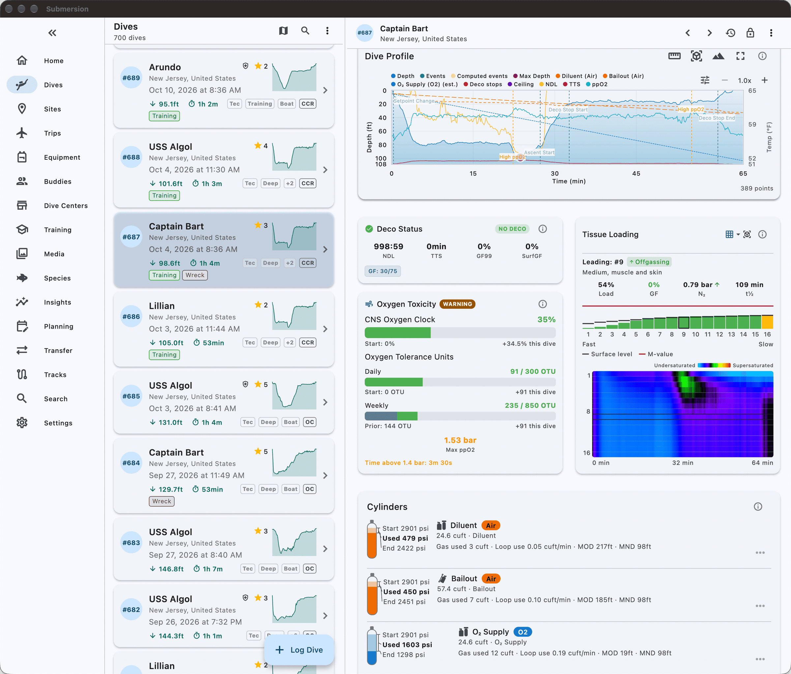
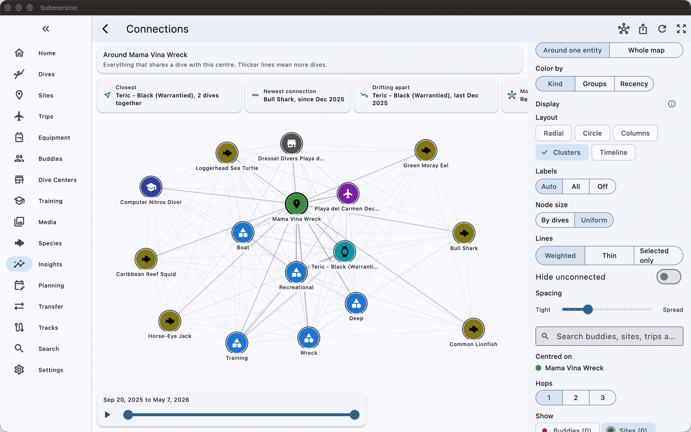
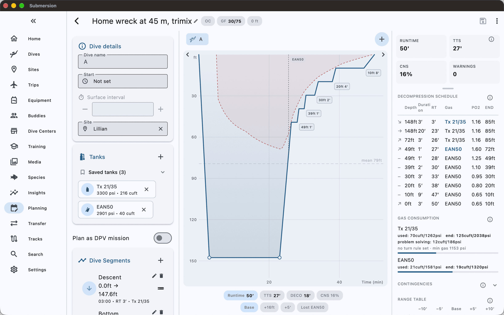
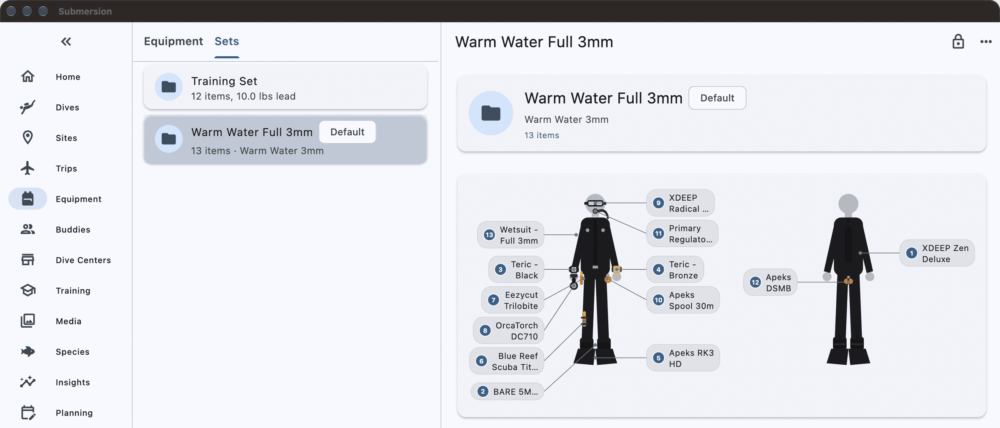

350+ computers
Submersion bundles libdivecomputer: 358 models from 38 makers, over Bluetooth LE and USB. Bluetooth only on iOS. See which models divers have verified.
Free · Open source · iOS · Android · macOS · Windows · Linux
Submersion is a free and open-source dive application for recreational and technical divers. It downloads your computer, reads the profile, plans the next dive, keeps your gear on schedule, and stores all of it where you choose.

Submersion follows a dive from the download to the analysis. It keeps your sites, trips and photos, names the species in your video, and charts your diving over time.
Submersion reviews every dive, plans open-circuit and rebreather dives, and tracks service on your gear. It checks and calculates, and the decisions stay yours.
There is no Submersion account and no Submersion server. You sync through storage you choose, export in open formats, and can see every change you made.
The whole dive
Start with the download and end with the analysis. Every field is optional, so a quick reef dive and a staged decompression dive fit in the same log.
Download and import
Pair over Bluetooth or plug in over USB. After the first download only new dives come across, and a computer Submersion already knows connects on its own.

Submersion bundles libdivecomputer: 358 models from 38 makers, over Bluetooth LE and USB. Bluetooth only on iOS. See which models divers have verified.
A download that matches a dive you already have is shown beside it. Skip it, import it as new, replace the old source, or keep both computers' readings on one dive.
Import Subsurface, MacDive, Shearwater Cloud, Diving Log, DAN DL7, UDDF and Garmin FIT files, or CSV with presets. Sign in to Suunto, Garmin Connect or divelogs.de to bring dives across.
Scan paper logbook pages and Submersion reads the entries for you to check. On iOS, Apple Watch underwater workouts import with depth, temperature and heart rate.
The log
Each trip has an itinerary and a page for every day: the day's dives on a map, the day from sunrise to sunset, and the photos you took.

The Home page opens on your numbers, your recent trips, the gear that needs service and your latest profile.
Weather for the date and place, and tides computed offline from a global model, sit beside the depth and the time.
Buddies, instructors and guides with their role on each dive, and signatures taken on the boat.
Type "Bonaire last year" and the log finds those dives, with no filters or field names to learn.
Sites and what you saw
Species are identified on the device in your photos, and followed through your video with a label on each fish. Nothing leaves the device to do it.


The catalogue carries 20,999 dive sites and 3,593 dive centers from OpenStreetMap and other open sources. Save map regions for use offline.
See the terrain around a site in 3D, with depth contours and steep walls marked, where bathymetry covers it.
Photos and video match the dive by capture time and sit on the profile at the depth they were taken. Underwater colour is corrected in place.
Photo identification runs on iPhone, iPad, Mac, Android, Windows and Linux; video on all but Linux. It uses a model pack you download once, and Android needs 8 GB of memory.
Analysis
Move along the profile and read the deco status, oxygen exposure and the loading of all 16 tissue compartments at that moment, computed from the profile.

The model uses gradient factors and tracks nitrogen and helium. All 16 compartments are drawn as a heat map across the dive.
Each cylinder shows its mix, its start and end pressure, the gas used, SAC and RMV, and its maximum operating depth.
Every computer you wore downloads into the same dive. Put their profiles on one chart, each in its own colour.
Play the dive back with about twenty overlays, from ppO2 to gas density, or turn the profile into a 3D view.
Insights
Twelve pages of Insights, from depth and time trends to air consumption and conditions. Connections maps what you dive with: sites, trips, gear, species and the people you dive with.


Maximum depth, runtime and bottom time are charted for every dive. A rolling average shows the trend.
Pick one of nine built-in maps, such as trips and people or sites by species. You can also centre the map on one site, buddy or piece of gear.
Short notes tell you what changed, such as dives getting deeper or longer than the year before.
Your personal records, such as your deepest and longest dives, have a page of their own.
Diving more safely
Submersion reviews your dives, calculates your plans and tracks your gear. It is not a dive computer, and it does not replace your training, your buddy or your computer.
After every dive
Every dive gets a safety review: fast ascents, missed deco and safety stops, sawtooth profiles, a high gradient factor at the surface, late gas switches and isobaric counterdiffusion. Each finding names the time and the rate.


Findings are marked info, caution or significant. Any rule you do not want can be turned off.
Submersion models your net buoyancy across the dive. What if lets you try other lead, other water or a different suit.
CNS and OTU are totalled for each dive, for the day and for the past seven days.
Use your computer's numbers or Submersion's own calculation for NDL, ceiling, deco stops, TTS and CNS, one metric at a time.
Before the dive
Plan open circuit, CCR, SCR and pSCR dives segment by segment, with the deco schedule, gas use and contingencies worked out as you edit.

On a loop plan, bailout gas is checked against the point where you would need the most, and that point is marked on the chart.
The planner works out deeper, longer and lost-gas versions of the plan, and a range table of runtimes around it.
Plan a day of dives as a series. Tissues, CNS, OTU and cylinder pressures carry from one dive to the next.
Calculators cover MOD, best mix, MND, consumption, rock bottom and gas density. The blender works out real-gas fills.
Gear you can trust
Each item keeps its own clocks, by date, dives, hours and exposure to salt, cold and oxygen. Your sets are drawn on a diver and numbered, so you can see what goes where.

Regulator service comes due at 365 days or 100 dives, or after 50 cold dives. An O2-clean clock counts hours on high oxygen.
You answer a short check-in after each dive. Ten rules read the trend and flag the gear that needs a look.
Cylinders and gear get passports with QR and NFC tags. A phone without the app opens the fill record or the gear's details on this site.
Air-integration transmitters are tied to the cylinders they read. Service and inventory reports export as PDF.
Ready to go
Each certification shows when you last used it and when a refresher is due. Pre-dive checklists run from templates, and the emergency card works offline.

Built-in rules cover rebreather, decompression and other cards, and you can write your own.
Templates cover a BWRAF pre-dive check, GUE EDGE, a CCR build with O2 cell linearity checks, and gear packing.
One card holds emergency numbers, nearby chambers, your contacts and your medical notes, and it works offline.
A no-fly countdown runs from your last dives, using the published guidelines you choose.
Your data stays yours
Submersion is free and open source under GPL-3.0. There is no Submersion account, no ads, no subscription and nothing to buy.
Where it lives
Sync through your own Google Drive, Dropbox, S3 or WebDAV server, or a Git host, and iCloud on iPhone and iPad. Turn on end-to-end encryption and the storage holds only ciphertext.

Pair two devices and they sync over Bluetooth when they are close, with no cloud at all.
Encrypt the database on the device and lock the app with a password, plus Face ID, Touch ID or Windows Hello where you have them.
A backup is made before every upgrade. Schedule your own as well, encrypted if you like, to a folder or your cloud.
Photos and videos are linked from your library or folders, not copied into the logbook.
What you can see and take
Export to UDDF 3.2, CSV, Excel, KML or a PDF logbook. The data quality check shows where a record and its sensor data disagree, and offers the repair.

Downloads keep your computer's raw data, so dives can be read again when the parser improves.
Every edit is logged with what it was before. Revert one field or a whole operation, and the revert is logged too.
On desktop, an AI assistant can work with your logbook through a local server and a token. Each change it proposes is previewed before it is written.
GPL-3.0 on GitHub. Read the code, open an issue, or build it yourself.
Download
Free on every platform. iOS is on the App Store and Android is on Google Play. Desktop builds, and the Android APK, are on GitHub Releases.
DownloadAll platforms
Found a bug, or want something added? Open an issue on GitHub. For anything else, support@submersion.app.